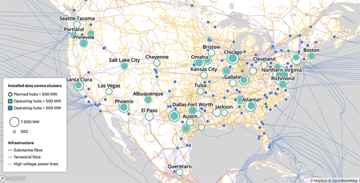
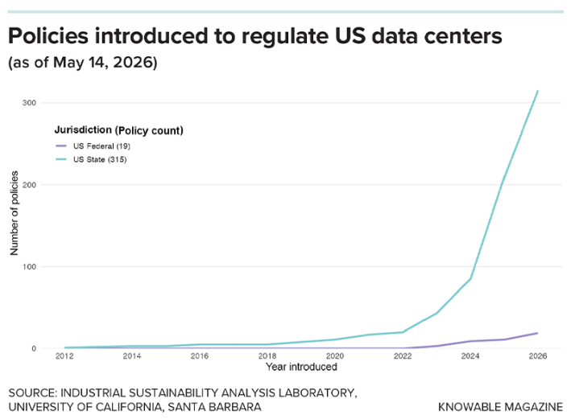

This articleoriginally appeared in Knowable Magazine.
As I sip coffee in my Berlin apartment and fire a question at Google’s AI chatbot Gemini, it’s easy not to think about the energy it takes to generate a response. Once the signal reaches my router, it whizzes, I assume, through copper wires or fiber-optic cables to one of Google’s data center hubs. Somewhere inside the data center’s labyrinthine halls of stacked processors, my query gets converted into numbers and undergoes billions of computations to determine context and meaning. The answer, once assembled, races back, in the blink of an eye.
Data centers—the beating hearts of the internet, powering everything from email to web searches—have existed for decades, but with the growing popularity of AI to generate text, images, and video, they’re using more energy than ever. According to Google’s own estimates, processing a median-length text prompt with its AI assistant Gemini consumes around 0.24 watt-hours.
These amounts, individually small—0.24 watt-hours is equivalent to watching TV for about nine seconds—are adding up fast. In March 2026, OpenAI estimated that more than 900 million people use its AI chatbot, ChatGPT, every week, tallying billions of queries daily.
THE POWER: Data centers have existed for decades, powering everything from email to web searches. But now, in the age of AI, they’re rapidly expanding. Credit: mahirkart / Adobe Stock.
The exact amount of electricity consumed by data centers, globally or in the United States, which hosts more than any other nation, isn’t publicly reported by all tech companies, says Eric Masanet of the University of California, Santa Barbara, who researches data center sustainability. But according to the most recent estimates by the International Energy Agency, U.S. data centers guzzled some 224 terawatt-hours of electricity in 2025—more than 5 percent of the country’s electricity use. That’s a significant uptick from an estimated 1.9 percent consumed in 2018, well before the mainstream surge of generative AI.
This electricity use seems set to soar. In the race to secure market leadership for generative AI products, companies like Google, Meta, Amazon, OpenAI, Anthropic, Microsoft, and Oracle are investing tens to hundreds of billions of dollars to build AI-focused data centers. Compared to data centers of the pre-AI days that consume, say, 100 megawatts of electricity—enough to power 83,000 homes with average demand—the newcomers are often “hyperscale” and can use a gigawatt or more, or roughly a tenth of the electrical capacity of Los Angeles.
Masanet and other experts have been alarmed to see much of this demand met by plants powered by fossil fuels, such as gas, whose burning releases planet-warming carbon dioxide. A key reason is that data centers are often constructed in places without abundant renewable energy sources like hydropower, geothermal, solar or wind.
Tech companies often offset emissions by investing in renewable energy elsewhere. But unless those clean energy plants make more energy than the data centers use, this strategy—at best—keeps CO2 emissions of centers in stasis rather than reducing them to a net of nothing, important for halting global warming. “For every megawatt for which we install fossil fuel power,” Masanet says, “it sets us back on our progress.”
And that’s not considering the resources spent on manufacturing the hardware that fills new data centers, or the impacts on communities living near them, which often suffer from air and noise pollution from gas plants and possible strain on local water resources, which are used to cool the data centers.

DATA CLUSTERS: Many data centers in the U.S. are concentrated in the Virginia area, according to a non-exhaustive database from the International Energy Agency. Credit: IEA / ENERGY AND AI OBSERVATORY 2025.
Although forecasts for AI’s energy impact remain devilishly tricky, especially since the size of payoffs from investments in AI are uncertain, it’s clear to experts that energy-saving strategies are urgently needed. Without them, according to one 2025 estimate, U.S. data centers could soon be releasing the equivalent of 24 to 44 megatons of CO2 annually, the latter equivalent to the annual emissions of Norway.
And so computer scientists and engineers are rethinking some of the power-hungry hardware and software that fuel AI. They’re working to develop energy-saving algorithms and processor designs, and carefully considering where, and how, data centers are constructed.
“AI’s energy cost is not an accident: This is basically a product of how our systems are built,” says Fengqi You, an expert in energy systems at Cornell University. But with the right mix of solutions, he says, “we could really reshape the trajectory.”
The roots of AI’s energy problem
To comprehend AI’s energy cost, it helps to understand large language models (LLMs)—the lifeblood of AI text generation tools such as chatbots and AI assistants—specifically, ones based on a design described in 2017 by the machine-learning laboratory Google Brain. This design, transformer architecture, can process text at lightning speed by simultaneously taking each word and weighing its relationship to every other word it sees. It “learns” which words go together by computing how strongly each word relates to all other words in a text, examining each word in many contexts. (A similar design is used for AI image and video generators.)
On a computational level, this happens by converting words or word fragments into numbers and performing additions and multiplications between them. Key to the speed is being able to do these calculations in parallel, made possible by graphic processor units (GPUs)—mostly manufactured by the company NVIDIA—originally invented for rapid 3-D rendering of imagery during gaming.
ONE CHIP AT A TIME: Manufacturers of the processing chips that fuel AI computations are working to make the chips more energy efficient; examples are the latest AI-specialized chips developed by NVIDIA. Credit: NVIDIA.
The initial training of an LLM, required to learn all these relationships, consumes vast amounts of energy. Because each word it trains on must be weighed against all others in a given chunk of text, the number of computations the model performs—hence the energy required—increases quadratically relative to the length of text (i.e., doubling the length of text quadruples the number of computations). That adds up quickly given that most LLMs are trained on massive swaths of publicly available internet text. Some estimates suggest that training GPT-4—the iteration of ChatGPT that launched in 2023—guzzled between 50 and 60 gigawatt-hours of electricity, enough to power San Francisco for three to four days.
But experts are more worried about the energy costs of using the models to generate data once they’ve been trained, a process called inference. “You train once, then you inference for a billion people in the world,” says Mosharaf Chowdhury, an AI systems expert at the University of Michigan who has been measuring the electricity usage of a handful of large language models that have been made publicly available.
This process is surprisingly inefficient: Each time transformer models generate a word—by selecting the one with the highest probability of following the previous word, given context—they put the query and partially written answer through the model. In doing so, they apply all of the parameters they’ve calculated during training to understand language patterns—which number in the hundreds of billions or even trillions.
“The fact that you have to do a lot of calculations for a single word to be added—that’s a problematic thing,” says Günter Klambauer, an AI expert at Johannes Kepler University in Austria.
Tweaking AI software to save energy
This recognition has triggered interest in smaller language models specialized to specific tasks. These are trained more narrowly, have fewer parameters—say, tens or hundreds of millions—and perform substantially less computation than larger models. In one 2025 paper published by UNESCO, computer scientist Ivana Drobnjak of University College London and colleagues compared energy consumption of Meta’s language model Llama-3.1 with smaller AI models dedicated to particular tasks—ones called DistilBART and t5-small-xsum for summarization, and others for translation or answering questions. When used for their respective tasks, the smaller models consumed more than 90 percent less energy than Llama 3.1 on the same job.
And so computer scientists have been driven to build a similar kind of task specialization into LLMs themselves. In “mixture of expert” models, only particular parts of one big model are activated for certain tasks. These parts “learn to handle different patterns in language,” Drobnjak says.
This is thought to be one reason why R1, an LLM developed by the Chinese company DeepSeek, reportedly consumed significantly less energy than other models (independent experts have raised doubts about those figures). Udit Gupta, an expert in electrical and computer engineering at Cornell Tech, says that LLMs like Gemini or ChatGPT are similarly routing queries to more specialized sub-models. “There’s a lot of work being done on how to assess the complexity of the query or task that’s coming from users and then find the right model,” Gupta says. (While Google spokesperson Ralf Bremer notes that the 0.24 watt-hours currently spent on processing median-length Gemini prompts is already 33 times more efficient than it was back in 2024, some experts suspect that processing queries with an LLM still consumes more energy than an equivalent web search.)
Scientists are also exploring different kinds of LLMs, to break what Klambauer calls the “quadratic curse” of transformer models.
One alternative, called a long short-term memory (LSTM) model, gets around this alarming energy increase by temporarily storing a kind of summary of the prompt that was inputted by the user plus the text generated so far, akin to recalling important plot points instead of an entire movie. That way, it only has to process the summary, rather than all the words in the full text to date, every time it generates a new word. This prevents LSTM’s energy costs from skyrocketing as it responds to a query—using about 50 percent less energy than transformer-type models to process texts of around 8,000 words in length, Klambauer says.
LSTM models were developed in the 1990s but were abandoned because transformers could be trained much faster. But Klambauer says that recent advances have improved the performance of LSTM, now called xLSTM. He’s working with the Austrian startup NXAI to further develop and optimize xLSTM, “because we think it’s worth it for energy efficiency,” he says.
But major tech companies have invested so many years and resources into developing transformer-based models that switching to other models would be costly, says Wolfgang Maaß, an AI and business informatics researcher at the German Research Center for Artificial Intelligence. “We have to see whether this becomes as dominant, or whether it finds a niche in the whole market.”
Computing with wafers and light
Though experts say the fastest energy savings will come from software tweaks, some are also taking aim at the energy-hungry processing chips that fuel AI computations. Engineers have made chips increasingly efficient over time by packing more computing capacity into individual processors—reducing the energy required to shuttle data between chips that are working together to perform AI computations. Engineers have done this by shrinking the size of transistors—microscopic electrical switches that process data—inside the chips.
But because engineers are reaching the physical limits of how small transistors can be, “we need to think of alternate ideas to improve the designs,” says computer architect Ajay Joshi of the Boston University Photonics Center.
One strategy is to make the chips larger. Dinner-plate-sized “wafer-scale chips” can pack nearly 70 times as many transistors as a single, postage-stamp-sized GPU and consume 143 times less electricity for communication than comparable GPUs, says computer engineer Rakesh Kumar of the University of Illinois Urbana-Champaign. Commercially produced by the California company Cerebras, wafer-scale chips have drawbacks, including a greater risk of damage during manufacturing. But because of their energy-saving and other beneficial features, “they would be very attractive to many hyperscalers and AI companies,” Kumar says.
IS BIGGER BETTER?: One strategy to make processors more efficient is to make them larger so they can contain more transistors, the building blocks of computers. “Wafer scale” chips, such as those developed by California-based manufacturer Cerebras, reduce the energy spent on shuttling information between individual chips. Credit: Cerebras Systems.
Many tech companies have improved energy efficiency by fashioning their own processors that are tailor-made for AI computations—such as Amazon Web Service’s Trainium2 chip or Google’s Ironwood Tensor Processing Units—according to statements from those companies. As for NVIDIA, the company’s head of sustainability Josh Parker says its AI-specialized GPUs have come a long way from the ones used for gaming and are now designed to run AI tasks as efficiently as possible; other innovations, such as making the interconnections between GPUs more efficient, have also helped. “Over the past eight years, NVIDIA GPUs have improved 45,000 [times] in energy efficiency for large language model workloads,” he says.
Engineers are also exploring alternative computing methods. Conventional AI processors calculate by encoding numbers in a binary system of ones and zeros, which is achieved by turning transistors on and off (representing the number 5, for instance, requires four transistors to represent the code 0101). But transistors can do more than function as binary switches allowing electron flow or not; they can also work as analog dials and hold intermediate voltages representing different numbers. That requires fewer transistors, and less energy, for computations. “People have known for decades that doing certain things in analog … can be a lot more energy efficient,” Kumar says.
For example, electrical engineer Paul Manea of the German research institute Forschungszentrum Jülich and colleagues are working to develop devices called “gain cells” that are full of transistors working this way. Importantly, gain cells can both store the data required to process a query, and compute the answer. That overcomes another big energy bottleneck of conventional computing systems, where memory storage and computation occur on separate pieces of hardware.
That’s especially problematic for transformer-based LLMs, because each time they generate a word, they must shuttle the query and partially written answer from memory to a processor. Manea and colleagues estimate that gain cells in lieu of traditional GPUs can reduce the energy guzzled by one of the most energy-consuming parts of transformer-based LLMs by four orders of magnitude. But it will take more refining before they can be more widely used, Manea says.
The notion of devices that both store and compute information is a key idea of “neuromorphic” computing, an up-and-coming field of computer engineering inspired by the human brain, which consumes orders of magnitude less energy than computers. Another brain-inspired invention is chips that encode information not in continuous data streams but—like human nerve cells—in the timing of voltage “spikes” propagating through the system. Allowing components to rest until they’re needed “could potentially translate to less energy,” says Eleni Vasilaki, an expert in bioinspired machine learning at the University of Sheffield in England.
Maaß, for example, is part of a team that received roughly $5.8 million from the German government to test neuromorphic chips, among other strategies, to reduce the energy required for AI models. Some brain-inspired chips are already commercially available, but the technology is still far from being attractive for mainstream computing, says nanoelectronics expert Tony Kenyon of University College London, whose team recently received $17 million from the United Kingdom government to develop neuromorphic computing.
Other scientists are developing chips that process information not with electrons but through the interaction of photons—particles of light—with matter (fiber-optic cables, which encode and transmit data as light pulses, are used around the world). With photons, more information can be transmitted at the same time, and signals can be altered much faster, says Elena Goi, a photonic computing researcher at Friedrich Schiller University Jena in Germany.
Several companies have developed chips that can perform some AI computations with optical methods, says Joshi; he recently estimated that manufacturing optical chips could consume up to an order of magnitude less energy than conventional ones of the same size. Joshi hopes that, “in 10 years, we would have a practical solution that can be deployed pervasively across the data centers.”
Reshaping AI’s energy trajectory
Even without reinventing how computers work, much can be done to reduce AI’s impact not just on energy but also on water resources used for cooling data centers. Importantly, tech companies should reconsider where they build those centers, says energy systems expert You. Right now, existing U.S. ones are concentrated in northern Virginia, which has limited water resources and renewable energy capacity compared with the Midwest, for instance. You recently estimated that better siting—along with energy-efficient hardware and software—could reduce future carbon and water footprints of U.S. data centers by 73 percent and 86 percent, respectively.
BAD NEIGHBOR: Data centers—and the gas plants often built to power them—can cause air and noise pollution and add further strain on local water resources, leading many communities to oppose their construction. Credit: Lomb / Adobe Stock.
Masanet adds that tech companies already with data centers across the country could at least train their models in strategic places. “Some companies like Google have been doing this: They shift their loads to follow renewables,” he says. They also should address the electricity and resources spent on manufacturing processors for new data centers, as well as electronic waste as outdated tech is replaced every few years, he adds.
Minimizing e-waste by using hardware for longer periods and recovering old electronics is one of Amazon’s sustainability strategies, according to a statement to Knowable Magazine; so is designing data centers in energy- and water-saving ways and investing in a slew of renewable and nuclear energy projects. “We’ll continue to implement solutions that benefit our customers and the communities we operate in,” says Brandon Oyer, Amazon Web Services’ head of energy and water in the Americas.
Meanwhile, a press representative at Microsoft points to a number of sustainability initiatives the company has taken, including new cooling technologies, renewable energy investments, and waste reduction. Google spokesperson Ralf Bremer emphasized the company’s goal of reaching net-zero emissions across its operations by 2030 and replenishing 120 percent of the fresh water consumed by its offices and data centers by 2030. An OpenAI representative points to a press release outlining efforts to minimize water use and plans for solar energy generation at one of its campuses. Anthropic, Meta, and Oracle did not respond to requests for comment by deadline.
Though tech companies are taking sustainability into consideration, their main objective is to rapidly build out data center capacity, says computer engineer Benjamin Lee of the University of Pennsylvania. He predicts that, eventually, they’ll need to step up efforts to improve energy efficiency to reduce costs. Governments should help to accelerate this shift, Masanet says. So far, he and his team have counted nearly 220 policies introduced to address data center sustainability at the U.S. state level, 18 at the federal level, and more from other countries, though not all were ultimately adopted.
“It’s clear that governments around the world are beginning to take action,” he says. However, he adds, “we also see some state and local governments with proposed policies that mostly aim to incentivize and accelerate data center builds.”

DATA ON DATA: The Industrial Sustainability Analysis Laboratory at the University of California, Santa Barbara has been tracking state and federal policies related to data centers. The vast majority of these policies relate to data center sustainability in some way, although they also include some tax incentives. This dataset may not be exhaustive, and includes policies that didn't pass.
AI’s energy cost will ultimately be a balancing act: Will it save more resources through its problem-solving abilities deployed toward everything from finding cancer cures to improving logistics, than it demands? But though building a more frugal, energy-saving AI is important, so is carefully considering where AI is needed, Kenyon says. Is the world truly a better place, for example, with nonhuman “AI agents” providing customer support?
“I think it’s a common mistake, when a new technology comes in, to suddenly think, ‘Well, everything has to adopt that new technology,’” he says. “That approach really isn’t doing us any favors.” 
This articleoriginally appeared inKnowable Magazine, a nonprofit publication dedicated to making scientific knowledge accessible to all.Sign up forKnowable Magazine’s newsletter.
Lead image: Lee / Adobe Stock